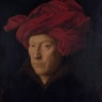

Arnolfini Portrait
Jan van Eyck
1434
It is considered one of the most original and complex paintings in Western art, because of its beauty, complex iconography, geometric orthogonal perspective, and expansion of the picture space with the use of a mirror. According to Ernst Gombrich \"in its own way it was as new and revolutionary as Donatello's or Masaccio's work in Italy. A simple corner of the real world had suddenly been fixed on to a panel as if by magic ... For the first time in history the artist became the perfect eye-witness in the truest sense of the term\".
GO TO SOURCE